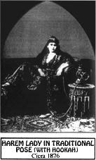

|  |
| |
The 18th Century ushered in a new era of human thought and civilization; “Life, Liberty and the Pursuit of Happiness!” declared the colonists in America. “Liberty, Equality, Fraternity!” replied their French cousins. The concepts of modern constitutional government, which guaranteed human rights and separation of church and state, were unified into a policy designed to protect citizens from intolerant and arbitrary laws.

In his landmark essay, On Liberty, Ogden Livingston Mills, whose philosophy shaped our democracy, wrote that “Human liberty comprises, first, the inward domain of consciousness in the most comprehensive sense: liberty of thought and feeling, …scientific, moral or theological, …liberty of tastes and pursuits.”
Mills asserted that this freedom of thought or of “mind” is the basis for all freedoms. Gentleman farmer Thomas Jefferson’s immortal words, “I have sworn upon the alter of God eternal hostility against every form of tyranny over the mind of man,” are engraved into the marble of his Memorial in Washington D.C.
Abraham Lincoln was an avowed enemy of prohibition. His wife was prescribed cannabis for her nerves after his assassination. Virtually every president from the mid-19th Century up until prohibition routinely used cannabis medicines (See chapter 12: 19th Century use).
Close acquaintances of John F. Kennedy, such as entertainers Morey Amsterdam and Eddie Gordon* say the president used cannabis regularly to control his back pain (before and during his term) and actually planned on legalizing “marijuana” during his second term—a plan cut short by his assassination in 1963.
“How Heads of State Got High,” High Times, April, 1980 (see appendix in paper version of this book).
* As reported directly to this author by Eddie Gordon, reknowned harmonica virtuoso, member of the Harmonicats, and the number-one harmonicist in the world, who smoked with Kennedy and performed numerous times for him.
More recently, former president Gerald Ford’s son Jack and Jimmy Carter’s son Chip admit to having smoked pot in the White House. George Bush’s vice president Dan Quayle* had a reputation for smoking grass and using drugs in college. Ronald and even former first lady Nancy “Just Say No” Reagan are reported to have smoked pot in the California Governor’s mansion.
* “Smoke Screen: Inmate Sues Justice Department Over Quayle-Pot Cover-up,” Dallas Observer, August 23, 1990. Kelley, Kitty, Nancy Reagan: The Unauthorized Biography, Doubleday Co., NY, 1991.
the authorized on-line version of Jack Herer’s “The Emperor Wears No Clothes”
| previous page | Chapter 10 | next page |
|
 |
 |
 |
 |